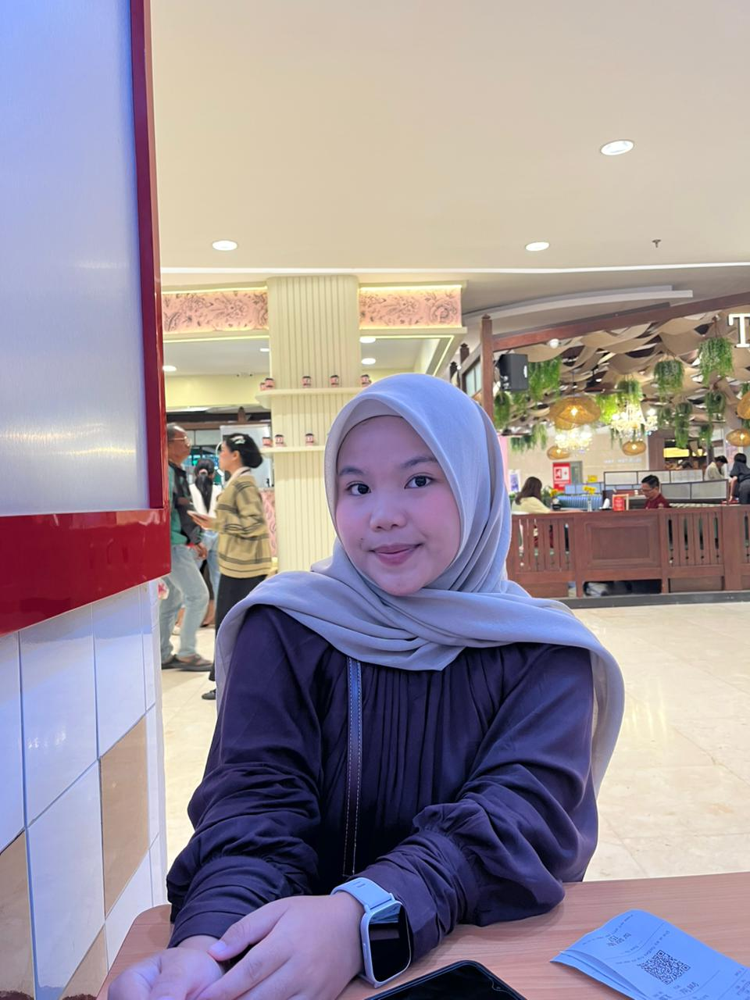

Foto Profil

📝 Tentang Saya
Halo! Perkenalkan nama saya Dina Purwandari. Saya lahir di
Teluk Mega pada tanggal 04 Desember 2006. Saya adalah Mahasiswi Program Studi Sistem Informasi
di Universitas Muhammadiyah Sumatera Utara.
Saya memiliki ketertarikan dalam bidang teknologi,
terutama web development dan artificial intelligence.
Saya bersemangat untuk belajar hal-hal baru dan mengembangkan
keterampilan saya.
📋 Data Pribadi
- Nama Lengkap: Dina Purwandari
- Tempat, Tanggal Lahir: Teluk Mega, 04 Desember 2006
- Alamat: Kisaran, Asahan
- Status: Belum Menikah
- Agama: Islam
- Kewarganegaraan: Indonesia
🎨 Hobi & Minat
- Membaca Novel
- Traveling ke tempat-tempat baru
- Bersepeda
- Menonton film dan series
🎓 Riwayat Pendidikan
-
SD Negeri 018456 Persatuan (2012 - 2018)
Lulus
-
MTS An Nikmah (2018 - 2021)
Lulus
-
MAS Darul Falah (2021 - 2024)
Jurusan IPA, Lulus
-
Universitas Muhammadiyah Sumatera Utara (2024 - Sekarang)
Jurusan Sistem Informasi, IPK 3.79/4.00
💻 Keterampilan
- Programming Languages: HTML, CSS, Python, C++
- Frameworks: React, Node.js, Express
- Database: MySQL, MariaDB
- Tools: VS Code, XAMPP, Linux
- Languages: Indonesia (Native), English (Advanced)
💼 Pengalaman Kerja dan Akademik
-
Private Qur'an Teacher - Skillyzone
Membimbing peserta didik dalam membaca Al-Qur'an sesuai kaidah tajwid
-
Teknologi Open Source - Semester 2
Mengembangkan web sederhana pada server lokal (client server)
📅 Jadwal Harian
| Waktu |
Kegiatan |
| 05.30 - 07.30 |
Sholat dan Persiapan Kuliah |
| 07.30 - 12.30 |
Kuliah |
| 12.30 - 14.00 |
Sholat, Makan siang, Istirahat |
| 14.00 - 16.00 |
Kuliah / Free Time |
| 16.00 - 19.00 |
Waktu kebersihan diri |
| 19.00 - 23.30 |
Belajar dan Free Time |
| 23.30 - 05.30 |
Tidur |
📞 Kontak Saya
📱 Social Media
Instagram